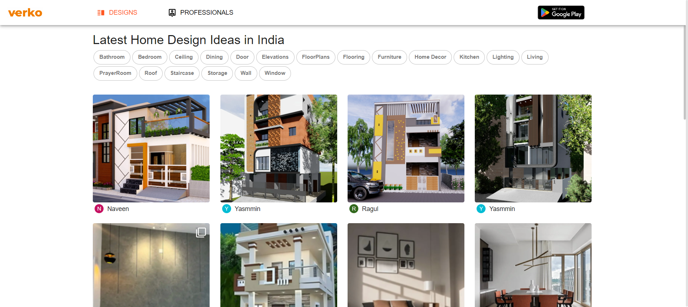

-
VerKo Design Validations
1:19:26 pm / 00:00:16:459 Pass
VerKo Design Validations
08.13.2024 1:19:26 pm 08.13.2024 1:19:43 pm 00:00:16:459 · #test-id=1As a user of the verko website I want Open Design Page and perform ValidationsPassSuccessful Validation of Design PageGiven Launching the Applicationcom.qa.mystepdefs.Design_Professional_StepDefinitions.addScreenshot(io.cucumber.java.Scenario)screenshotGiven Click On the Design Option from the Landing Pagecom.qa.mystepdefs.Design_Professional_StepDefinitions.addScreenshot(io.cucumber.java.Scenario)screenshotWhen Design Landing Page Validationcom.qa.mystepdefs.Design_Professional_StepDefinitions.addScreenshot(io.cucumber.java.Scenario)screenshotAnd Design page Tag Validationscom.qa.mystepdefs.Design_Professional_StepDefinitions.addScreenshot(io.cucumber.java.Scenario)screenshotAnd Open the Post in the Design Pagecom.qa.mystepdefs.Design_Professional_StepDefinitions.addScreenshot(io.cucumber.java.Scenario)screenshotAnd Do like and DisLike the Postcom.qa.mystepdefs.Design_Professional_StepDefinitions.addScreenshot(io.cucumber.java.Scenario)screenshotAnd Close the PopUp Window - Openedcom.qa.mystepdefs.Design_Professional_StepDefinitions.addScreenshot(io.cucumber.java.Scenario)screenshot Then Close the Post Selectedcom.qa.mystepdefs.Design_Professional_StepDefinitions.addScreenshot(io.cucumber.java.Scenario)screenshot
Then Close the Post Selectedcom.qa.mystepdefs.Design_Professional_StepDefinitions.addScreenshot(io.cucumber.java.Scenario)screenshot -
VerKo Professional Validations
1:19:43 pm / 00:00:21:275 Fail
VerKo Professional Validations
08.13.2024 1:19:43 pm 08.13.2024 1:20:04 pm 00:00:21:275 · #test-id=21As a user of the verko website I want Open Profressional and perform ValidationsFailSuccessful Validation of Professional PageGiven Launching the Applicationcom.qa.mystepdefs.Design_Professional_StepDefinitions.addScreenshot(io.cucumber.java.Scenario)screenshotGiven Click On the Professional Option from the Landing Pagecom.qa.mystepdefs.Design_Professional_StepDefinitions.addScreenshot(io.cucumber.java.Scenario)screenshot When Professional Landing Page Validationcom.qa.mystepdefs.Design_Professional_StepDefinitions.addScreenshot(io.cucumber.java.Scenario)screenshot
When Professional Landing Page Validationcom.qa.mystepdefs.Design_Professional_StepDefinitions.addScreenshot(io.cucumber.java.Scenario)screenshot And Check for the Location buttoncom.qa.mystepdefs.Design_Professional_StepDefinitions.addScreenshot(io.cucumber.java.Scenario)screenshotAnd Check the Entries available in the Dropdowncom.qa.mystepdefs.Design_Professional_StepDefinitions.addScreenshot(io.cucumber.java.Scenario)screenshotAnd Remove the Selected Entry from the dropdown listcom.qa.mystepdefs.Design_Professional_StepDefinitions.addScreenshot(io.cucumber.java.Scenario)screenshot
And Check for the Location buttoncom.qa.mystepdefs.Design_Professional_StepDefinitions.addScreenshot(io.cucumber.java.Scenario)screenshotAnd Check the Entries available in the Dropdowncom.qa.mystepdefs.Design_Professional_StepDefinitions.addScreenshot(io.cucumber.java.Scenario)screenshotAnd Remove the Selected Entry from the dropdown listcom.qa.mystepdefs.Design_Professional_StepDefinitions.addScreenshot(io.cucumber.java.Scenario)screenshot And Check for the Service Provider buttoncom.qa.mystepdefs.Design_Professional_StepDefinitions.addScreenshot(io.cucumber.java.Scenario)screenshot
And Check for the Service Provider buttoncom.qa.mystepdefs.Design_Professional_StepDefinitions.addScreenshot(io.cucumber.java.Scenario)screenshot And Check the Entries available in the Dropdowncom.qa.mystepdefs.Design_Professional_StepDefinitions.addScreenshot(io.cucumber.java.Scenario)And Remove the Selected Entry from the dropdown listStep skippedAnd Check for the Material Supplier buttonStep skippedAnd Check the Entries available in the DropdownStep skippedAnd Remove the Selected Entry from the dropdown listStep skippedAnd Click on the Visit Page buttonStep skippedAnd Jump into the Profile WindowStep skippedAnd Click on the Follow button buttonStep skippedAnd Close the PopUp Window - OpenedStep skippedAnd Click on the Message button buttonStep skippedAnd Close the PopUp Window - OpenedStep skippedAnd Open the Post in the Professional PageStep skippedAnd Do like and DisLike the PostStep skippedAnd Close the PopUp Window - OpenedStep skippedThen Close the Post SelectedStep skippedAnd Open the Discussion Tab AvailableStep skipped
And Check the Entries available in the Dropdowncom.qa.mystepdefs.Design_Professional_StepDefinitions.addScreenshot(io.cucumber.java.Scenario)And Remove the Selected Entry from the dropdown listStep skippedAnd Check for the Material Supplier buttonStep skippedAnd Check the Entries available in the DropdownStep skippedAnd Remove the Selected Entry from the dropdown listStep skippedAnd Click on the Visit Page buttonStep skippedAnd Jump into the Profile WindowStep skippedAnd Click on the Follow button buttonStep skippedAnd Close the PopUp Window - OpenedStep skippedAnd Click on the Message button buttonStep skippedAnd Close the PopUp Window - OpenedStep skippedAnd Open the Post in the Professional PageStep skippedAnd Do like and DisLike the PostStep skippedAnd Close the PopUp Window - OpenedStep skippedThen Close the Post SelectedStep skippedAnd Open the Discussion Tab AvailableStep skipped
-
org.openqa.selenium.NoSuchWindowException
1 tests
org.openqa.selenium.NoSuchWindowException
1 failedStatus Timestamp TestName Fail 13:20:04 pm com.qa.mystepdefs.Design_Professional_StepDefinitions.addScreenshot(io.cucumber.java.Scenario) VerKo Professional Validations.Successful Validation of Professional Page.com.qa.mystepdefs.Design_Professional_StepDefinitions.addScreenshot(io.cucumber.java.Scenario)
-
@AllValidations
2 tests
@AllValidations
1 passed 1 failedStatus Timestamp TestName Pass 13:19:26 pm Successful Validation of Design Page VerKo Design Validations.Successful Validation of Design PageFail 13:19:43 pm Successful Validation of Professional Page VerKo Professional Validations.Successful Validation of Professional Page -
@DesignValidations
1 tests
@DesignValidations
1 passedStatus Timestamp TestName Pass 13:19:26 pm Successful Validation of Design Page VerKo Design Validations.Successful Validation of Design Page -
@ProfessionalValidations
1 tests
@ProfessionalValidations
1 failedStatus Timestamp TestName Fail 13:19:43 pm Successful Validation of Professional Page VerKo Professional Validations.Successful Validation of Professional Page
Started
Aug 13, 2024 01:19:26 pm
Ended
Aug 13, 2024 01:20:04 pm
Features Passed
1
Features Failed
1
Features
Scenarios
Steps
Timeline
Tags
| Name | Passed | Failed | Skipped | Others | Passed % |
|---|---|---|---|---|---|
| @AllValidations | 1 | 1 | 0 | 0 | 50% |
| @DesignValidations | 1 | 0 | 0 | 0 | 100% |
| @ProfessionalValidations | 0 | 1 | 0 | 0 | 0% |